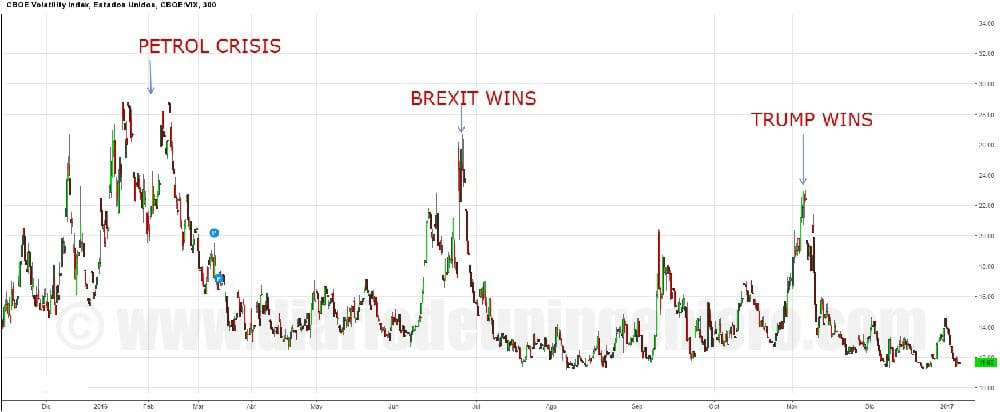

This year we had a well-marked appointment, it was none other than the United States elections on November 8, the first Tuesday after the first Monday in November.
In this case the main actors were Hillary Clinton, the favorite, by the Democratic side and Donald Trump by the Republican side.
There has not been an election that has generated so much expectation in the international framework. This is so because of the great difference of vision and the way of being of the two candidates.
 On one hand Hillary Clinton , the first woman to appear as president in US history, with a long history in American politics.
She is quite cultured and intelligent, and she has a good command of the international sphere.
As well as the more moderate wing of the Democratic party and having had to yield to the other candidate's supporters by the Democratic party to get together followers.
That is why in these elections was a guarantee to continue with the welfare state, with measures such as the extension of health insurance to more Americans, the famous Obamacare and to follow a pacifying strategy on the international scene.
It is also an advocate for the environment, promoting renewable energies and also wanted to start spending on infrastructure to get the industrial sector awake again.
On one hand Hillary Clinton , the first woman to appear as president in US history, with a long history in American politics.
She is quite cultured and intelligent, and she has a good command of the international sphere.
As well as the more moderate wing of the Democratic party and having had to yield to the other candidate's supporters by the Democratic party to get together followers.
That is why in these elections was a guarantee to continue with the welfare state, with measures such as the extension of health insurance to more Americans, the famous Obamacare and to follow a pacifying strategy on the international scene.
It is also an advocate for the environment, promoting renewable energies and also wanted to start spending on infrastructure to get the industrial sector awake again.
On the other hand Donald Trump , a multi-billionaire with a very controversial past in the media, due to count on numerous companies and influence in many sectors.
It is a nostalgic thought for many Americans, as it favors a policy that does not fit and would have a very high economic cost for the world today, where everything is connected and globalized.
Its ideas are the recovery of the center of the United States, the awakening of the industrial companies and the energy sector and to be able to compete with other giants like China or Russia in those sectors.
This is impossible because of the much higher costs and salaries in the USA. However, due to its more sincere tone and with a much simpler and attractive language for the less cultured Americans, it has sank with great force.
That coupled with the idea that the United States is controlled by bureaucrats who only think of their pockets and attacks on the bourgeoisie in Washington has gained much popularity.
There is a paradox that he is one of those who has benefited most for years from that system that criticizes .
Since he has evaded taxes and is in numerous trials with many of his companies.
In fact, after the electoral victory he has yet to appear in more than 300 trials .
However, as in Brexit, the result was that no one was coming, and Trump won by thrashing Clinton, who did not slow to acknowledge defeat and try to iron out rough edges.
This is so because United States can not afford to have the population divided and more with two candidates so disparate.
So Trump also did his thing, discarding much of his most controversial measures and lowering as far as he could go in others.
The most controversial measures that he replaced or discard were the following:
Other measures that will be carried out under Trump's mandate will be the following:
After the end of the count, the result gave Trump a winner. Key states for his win were Michigan where he won against polls results.
Never in the last 20 years had he won a Republican candidate in this state. And is that the crisis has not affected in all states equally and in Michigan there are too many inequalities.
In fact it was there that Trump closed his campaign. Other states where the winning candidate's triumph has always been Ohio, Floria and Pennsylvania .
Well in these three states also Trump won. In Pennsylvania as in Michigan by a very narrow margin.
It is noteworthy that popular vote won by Clinton from there still more merit Trump's victory that he knew how to play his cards , and of the campaign team rather.

From 3 am, GMT+1 time, Donald Trump headed the bets to win and the market did not assimilate at first.
That could be seen perfectly in the foreign exchange market and in precious metals.
In the campaign due to uncertainty the dollar fell to 1.11: 1 USD / EUR and according to Trump was coming winner the dollar lost positions down to 1.13: 1 USD / EUR.
After the panic seller the dollar was gaining margin until the euphoria reached the market finishing in 1: 108 with a differential of 3.5% as seen in the chart.
A few sessions later the dollar would hit historical maximums since the birth of the euro reaching 1: 10.04 very close to parity.
Gold started to raise its price but did not get as high as when the Brexit as well as the volatility index.

Main European indexes opened with big declines, but little by little they were going back to positions encouraged by the purchases since a US election can not affect us as much as the separation of the United Kingdom.
So when Trump left retracting some measures the next morning in the USA and Clinton asking for unity, the bags began to rise and specifically the American.
In the United States the values that had favored Trump in the campaign and especially the industrial values that saw Trump as an opportunity to take off since these last years has been where more unemployment has been.
Industrial, mining and steel companies as well as pharmaceutical companies that have had a very bad years with Obama due to limitations and high government control.
Against renewable energies and the technological sector after the speeches of Trump in which it was encouraged to bring their products to the United States or would suffer with additional measures.
As these two types of companies traded in different indices saw a very large inequality between the Nasdaq almost flat and the Dow Jones that managed to reach historical highs.
In the NASDAQ index there is a green ellipse where you can see how the Nasdaq suffered a sharp drop in opening.
In the following chart we appreciate that it happened with the indices on the day of the elections:

Several sessions later the Nasdaq would also rise and both indexes are now at historical highs .
Although at the beginning after the victory of Trump it seemed that everything was going to collapse quickly everything recovered and the all turned upwards.
In addition there has been some rally in the raw materials as strong investments in infrastructure are expected for next year.
© 2016 - All Rights Reserved - Diseñada por Sergio López Martínez
![[Valid RSS]](https://www.feedvalidator.org/images/valid-rss-rogers.png "Validate my RSS feed")